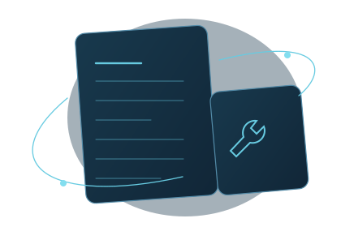

AI DESIGN 996 · 實踐分享
分享 AI 的用法，也分享做出來的工具。
記錄真實實踐，講清背後的方法。你可以在這裡閱讀文章，也可以安裝工具，自己試一試。

最新文章
全部文章可用技能
全部技能Team LeaderSkill
為 AI 專案配一位負責人，組織工作、協調配合，並借鑑已有經驗。
AI DESIGN 996 · 實踐分享
記錄真實實踐，講清背後的方法。你可以在這裡閱讀文章，也可以安裝工具，自己試一試。

為 AI 專案配一位負責人，組織工作、協調配合，並借鑑已有經驗。